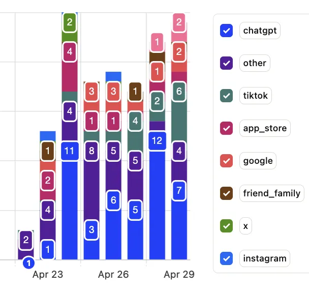
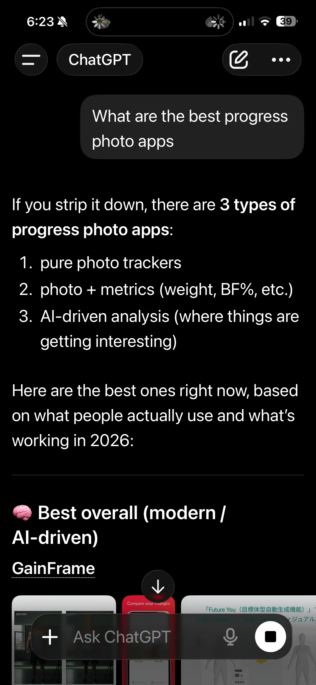

ChatGPT Sends Us 31% of Our Users — Here's the Generative Engine Optimization Playbook We Used
A solo dev's real PostHog data on AI as the #1 acquisition channel — and the 5 structural changes that got us cited.
Quick answer: ChatGPT now sends us 31% of new users — more than TikTok (16.5%), App Store (10.4%), or Google (8.7%). We didn't run a generative engine optimization campaign. We wrote helpful posts, then shipped five structural changes: Quick Answer blocks, question-format H2s, visible FAQ sections with schema, multi-schema JSON-LD with author entity, and IndexNow pings to Bing.
I was shocked.
For the past two months I've been putting almost all of my marketing time into three channels: TikTok carousels, Apple Search Optimization, and SEO. Those were supposed to be the main sources. So when I added a "How did you hear about us?" question to onboarding and looked at the data a week later, I had to read the chart twice.
ChatGPT was #1. Not third. Not "an interesting long tail." First place, by almost double the next channel.

PostHog attribution mix, Apr 23–29, 2026. n=115 self-reported responses among onboarding completers. Caveat: this isn't installs — it's "how did you hear about us" among users who answered the question. Still, the relative shape is striking.
Then I ran the obvious sanity check. I opened ChatGPT in another window and typed the most common query a user might ask in our category: "What are the best progress photo apps?"

ChatGPT's answer to "what are the best progress photo apps" lists GainFrame first under "Best overall (modern / AI-driven)." This is what 31% of our acquisition looks like upstream — a citation, not a click.
GainFrame ranked #1. Listed under "Best overall (modern / AI-driven)." A solo-dev iOS app, 49 days old, beating apps with 9,000+ App Store reviews to the top of ChatGPT's answer.
This post is the playbook of what I actually shipped — every change is a real commit, not a speculation. If you're a founder, indie hacker, or marketer trying to figure out where AI fits in the channel mix, this is one data point with the receipts attached.
What is generative engine optimization (GEO)?
Generative engine optimization is the practice of structuring your content so AI systems — ChatGPT, Claude, Perplexity, Google AI Overviews, Microsoft Copilot — can find it, understand it, and cite it when answering user questions. The metric isn't clicks. It's citations.
The terminology is messy because the practice is new. You'll see all of these used roughly interchangeably:
| Term | What it actually means |
|---|---|
| GEO (Generative Engine Optimization) | The umbrella term. Optimizing for any AI system that generates answers — chat, search overviews, voice assistants. |
| AEO (Answer Engine Optimization) | The same thing, framed around "answer engines." Slightly older term. |
| LLM SEO | The same thing, framed around large language models specifically. |
| AI SEO | The same thing, more casual phrasing. |
I'll use "GEO" for the rest of this post but you can substitute any of the others.
The thing every definition misses: GEO is not a replacement for SEO. It's a layer on top of it. ChatGPT doesn't crawl the web independently — it pulls from Bing. If you're not findable in traditional search, you can't be cited by AI either. The good news is the work overlaps almost entirely. Every change I shipped helps both.
Why did ChatGPT become our #1 channel before TikTok or App Store?
Honestly, I think it's because ChatGPT is the channel where helpful content compounds the fastest right now.
On TikTok, every video starts at zero. The algorithm decides what gets shown that day. A carousel from three weeks ago is essentially invisible. App Store has the same dynamic — your install velocity right now is what matters; last month's traffic is gone.
ChatGPT works the opposite way. Once your content gets pulled into the citation pool, every relevant query in that category surfaces it again. The cited article keeps working forever — or at least until something clearly better replaces it. The compounding is invisible, then suddenly it's a third of your traffic.
The other reason: there's almost no competition for citations yet. Most fitness apps are not optimizing for AI surfaces at all. The ones that try are mostly running paid social. The bar for ranking #1 in ChatGPT for "best progress photo apps" turns out to be much lower than ranking #1 in Google for the same query — because Google is saturated, and ChatGPT's source pool isn't.
How do you rank in ChatGPT?
The honest answer: you don't "rank" in ChatGPT the way you rank in Google. ChatGPT generates answers from a pool of sources it considers authoritative. Your job is to be in that pool, then to be the easiest source to extract.
Authority comes from the same E-E-A-T signals Google has been pushing for years — a real author, a real organization, content depth, mentions on other sites. We didn't focus on those directly. We focused on extractability — making it as easy as possible for an LLM to lift a clean answer from our content.
Here's what we shipped.
What 5 changes did we make to the blog?
All five of these are real commits. They took a weekend. None of them required backlinks, paid tools, or an SEO agency.
-
Add a Quick Answer block to every post
40–60 words. Right after the H1. Before the opening hook. It directly answers the post's primary question with no setup or qualifier sentence first.
This is the single biggest change. AI Overviews, ChatGPT citations, Google featured snippets — they all extract this block almost verbatim. Under 40 words and there's not enough to lift; over 60 and it gets truncated mid-sentence. Count the words.
-
Phrase every H2 as a full grammatical question
Not "The 15% Range." Not "Accuracy Comparison." Full questions: "What does 15% body fat look like on men and women?" "How accurate is body fat estimation from a photo compared to DEXA?"
LLMs are trained on conversational query patterns. Voice assistants, chat interfaces, AI Overviews — they all preferentially extract from sections whose headings match the way users actually phrase questions. Descriptive headings get skipped.
-
Add a visible FAQ section, with matching FAQPage JSON-LD
Every guide post ends with 4–8 question-and-answer pairs as plain H3 + paragraph. The same questions and answers go into FAQPage structured data, word-for-word. Mismatch is a Google penalty risk and means LLMs can't reliably extract the answer.
Each FAQ entry captures a long-tail follow-up query. They're free traffic. We retrofitted seven of our highest-trafficked posts with FAQ sections in a single commit.
-
Emit multi-schema JSON-LD with a normalized author entity
Every post now emits BlogPosting + BreadcrumbList, plus FAQPage and HowTo where applicable. The author block is the same canonical form on all 65 blog posts:
{ "@type": "Person", "name": "Michael Rode", "url": "https://gainframe.app/about" }That stable URL is the E-E-A-T anchor. It tells Google and LLMs there's a verifiable human behind the content. Author was previously a mix of "Organization + GainFrame" and "Person + Michael Rode" with no URL — fragmented signal. Normalized in one Python script that updated 65 files.
-
Ping IndexNow when you publish
This is the one nobody talks about. ChatGPT pulls roughly 63% of its citations from the top Bing result (vs. ~45% from Google). Bing is the gateway into ChatGPT. IndexNow is a free protocol that notifies Bing the moment you publish a new URL — Yandex, Seznam, and Naver also participate. Google does not, but for AI citation visibility, Google's not the one we needed.
We set it up as a 30-line Python script. It pings
api.indexnow.orgevery time we publish. New posts now get into Bing's index in hours instead of days.
Which change moved the needle most?
I don't know.
I shipped all five within a few days of each other and didn't run them as a controlled experiment. The PostHog attribution data started showing ChatGPT as a meaningful source about a week after the changes landed. By two weeks it was #1.
My honest read is that it was cumulative — and that the content was already good before the structural changes. Each post genuinely tries to help a person figure out a hard fitness question. The five changes didn't create that. They surfaced it properly so AI engines could read and cite it.
If I had to guess at the order of impact, I'd guess: (1) the Quick Answer blocks — the highest-leverage single change, because that's the literal text getting extracted. (2) The author entity normalization, because it suddenly told every LLM there was a real human author across all 65 posts. (3) IndexNow pings, because they got new posts into Bing fast. But those are guesses. I'd genuinely rather quote "I don't know which one worked" than fabricate a winner.
If you're going to ship just one of the five — ship the Quick Answer block. It's the smallest amount of work for the largest amount of extracted text.
How do you get cited by ChatGPT specifically?
Citations aren't random. From the patterns I see in pages that get cited (ours and others'), four traits show up over and over:
- A clean, extractable direct answer near the top of the page. 40–60 words is the sweet spot. AI engines will lift this almost word-for-word.
- Original data or first-hand experience. If your post says something nobody else's post says, you become the canonical source for that fact. This article is one example — almost every other post on this topic is consultant speculation, so a real PostHog screenshot becomes the cited source.
- Question-format structure. Headings that match how users phrase queries. Plain HTML, no important content hidden behind JavaScript or accordions — AI bots only read raw HTML.
- Recency. AI citations skew heavily toward content updated in the last 90 days. The
dateModifiedin your schema actually matters.
The fitness app category isn't unique here. Every category I've checked — SaaS tools, productivity apps, even niche hardware — has the same dynamic. The pages getting cited are the ones easiest to extract, not necessarily the ones with the most backlinks.
What this means for founders without big SEO budgets
The expensive moats in traditional SEO — domain authority, backlink profiles, paid tools, agency retainers — matter less than they used to. Not zero, but less.
The cheap moats — well-structured content, an honest author entity, a Quick Answer that actually answers the question, schema that mirrors visible content — matter more than they used to. A solo dev can ship the entire playbook in a weekend without spending a dollar on tools or backlinks.
That doesn't mean GEO is a free lunch. The hard part is still writing genuinely helpful content in the first place. The five changes don't make bad content rank. They make existing helpful content extractable. The order of operations matters: write the helpful thing first, then ship the structural changes.
If you're a fitness founder reading this and you want to compare notes on what's working in your category, my email is in my about page. I'm one person — this is a side project — and I'd genuinely rather trade notes than gatekeep.
Frequently asked questions
How do you rank in ChatGPT?
ChatGPT cites pages it can find on the open web (largely through Bing) that answer questions clearly and have authority signals attached — schema markup, a real author entity, FAQ sections, and direct answer paragraphs. You don't rank in ChatGPT the same way you rank in Google. You make your existing helpful content more extractable.
How do you get cited by ChatGPT specifically?
Put a 40–60 word direct answer at the top of every post (ChatGPT pulls these almost verbatim). Use question-format H2s. Add a visible FAQ section with matching FAQPage JSON-LD. Make sure your site is indexed in Bing — ChatGPT pulls roughly 63% of citations from the top Bing result.
What is generative engine optimization (GEO)?
Generative engine optimization (GEO) is the practice of structuring content so AI systems like ChatGPT, Claude, Perplexity, and Google AI Overviews can extract and cite it. Related terms — answer engine optimization (AEO), LLM SEO, AI SEO — describe roughly the same work. The metric is citations in AI answers, not clicks from search results.
Is GEO replacing SEO?
No. GEO and SEO share a foundation — both reward clear, helpful, well-structured content with real authority signals. ChatGPT doesn't crawl the web independently; it pulls from Bing's search index. If you can't be found in traditional search, you can't be cited by AI either. GEO is a layer on top of SEO, not a replacement.
Do you need a big SEO budget to do GEO?
No. Every change in our 5-step playbook is structural — Quick Answer blocks, question H2s, FAQ sections, schema markup, IndexNow pings. None of it costs money. None of it requires backlinks or paid tools. A solo dev can ship the whole playbook in a weekend. We did.
How do you measure if GEO is working?
Two ways. First, ask your own users — we use a single onboarding question ("How did you hear about us?") with ChatGPT as one option. PostHog tracks the response. Second, search your category in ChatGPT yourself and check whether your brand appears in the answer. Both signals are imperfect but directionally useful.
Curious what we're actually building?
GainFrame is the AI body composition app for serious gym-goers — the one ChatGPT keeps citing. AI Deep Dive scoring, side-by-side compare, future-physique prediction. Free tier, no account needed.
Download GainFrame Free